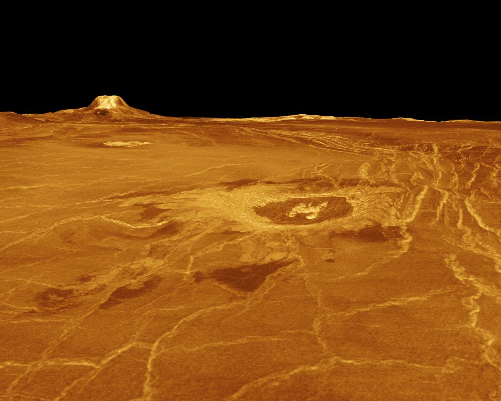

Astronomy World
Main
태양 이야기
달 이야기
우주 이야기
재미있는 상대성이론
About for Astronomy
은하와 별
세상에서 가장 큰 보석
하루가 일년같은 금성
햇빛의 나이는?
블랙홀
하루가 일년같은 금성

신기하게도 금성은 자전축을 중심으로 한 바퀴(자전) 돌기도 전에 먼저 태양 주위를 한 바퀴(공전) 돌기 때문에 금성에서의 하루는 지구의 일년과 비슷하다고 합니다. 예를 들어 금성에서는 제2차 세계대전이 불과 3개월 전 쯤에 끝난 것이나 다름없는데요. 금성에 있으면 진짜 말 그대로 하루가 일년처럼 느껴지겠네요.